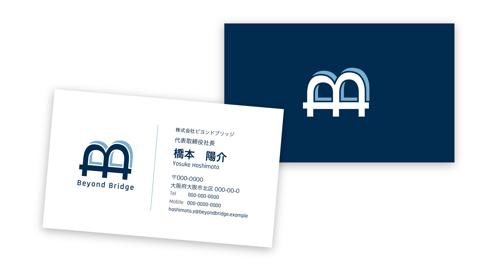
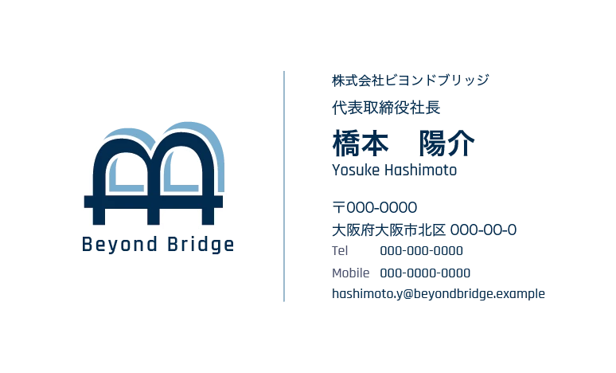
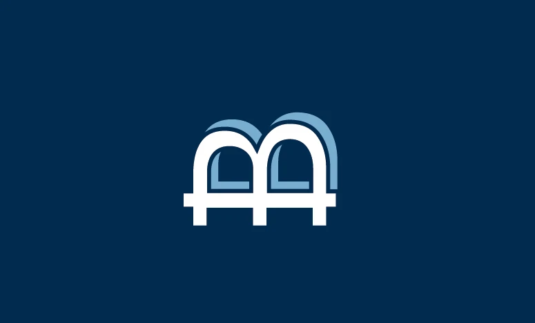

Beyond Bridge

制作期間
デザイン：3時間
使用ツール

Illustrator
生成AIの使用
-
Claude
操作・機能の質問
見え方の相談
概要
架空の企業「Beyond Bridge」のロゴと名刺(表・裏)を制作しました。
ターゲット
取引先や顧客など、ビジネスの場で名刺を受け取る方。
目的
初対面の相手に、信頼感と、社名の意味が伝わるロゴを作ることです。名刺としても、必要な情報を迷わず読み取れる設計にすることを目指しました。
コンセプト
社名の「Beyond(越える)」と「Bridge(橋)」に共通する頭文字の「B」を軸にしました。Bを横に倒すと、2つの膨らみが橋のアーチに例えました。さらに、奥にもう1つのBをずらして重ねることで、橋を越えて前へ進む動きを表現しました。
デザイン
ロゴは、太めのゴシック体のBを図形にして、90度倒し、アーチ形にしました。そこに橋桁と支柱を足して、橋の形に仕上げています。手前のネイビーと奥の水色をずらして重ね、手前に太めの白い縁を付けて、2つの層がはっきり分かれるようにしました。色は、信頼感のあるネイビーと、橋の下の水や空を思わせる水色、白の3色に絞っています。名刺の表は、左にロゴ、中央にロゴと同じ水色の縦線、右に会社名・肩書き・氏名・連絡先を置きました。氏名を一番大きくし、肩書きと連絡先を小さく揃えて、情報の優先順位が伝わるようにしています。文字は名刺の端から5mm以上離し、電話番号の位置はタブで揃えました。裏面は、ネイビーの全面塗りに、白と水色のロゴマークだけを置いています。白い縁を背景と同じネイビーに変えて、表と同じ重なりの見え方を保ちました。印刷を想定して、裏面には3mmの塗り足しも付けています。
※ 名刺に記載した氏名、住所、電話番号、メールアドレスは、すべて架空のものです。

